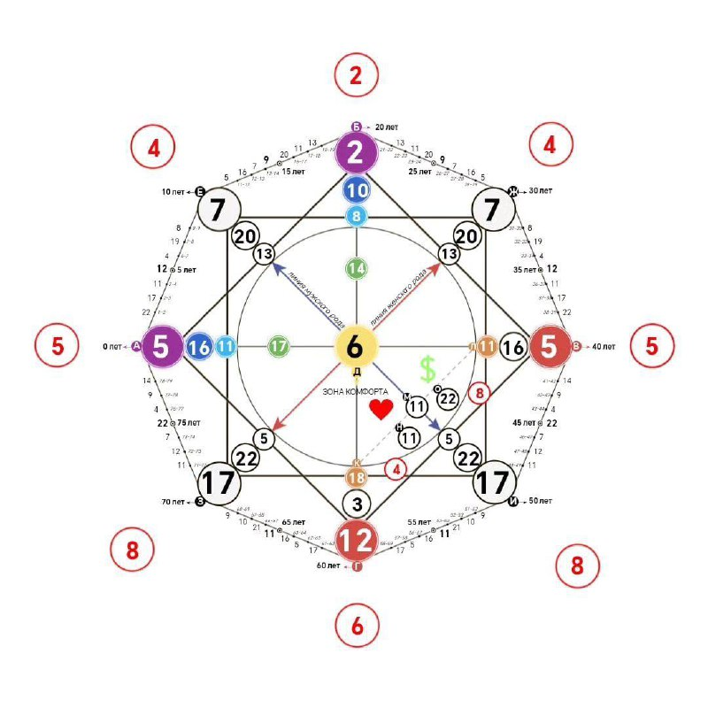
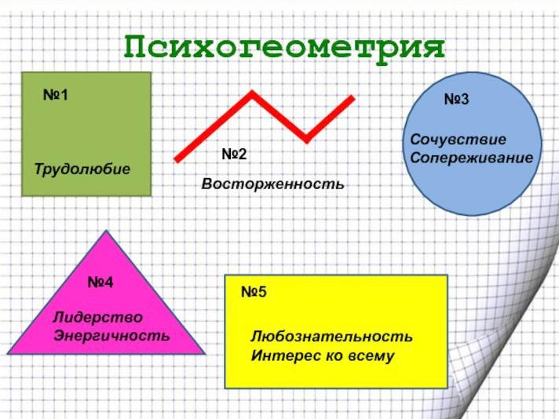
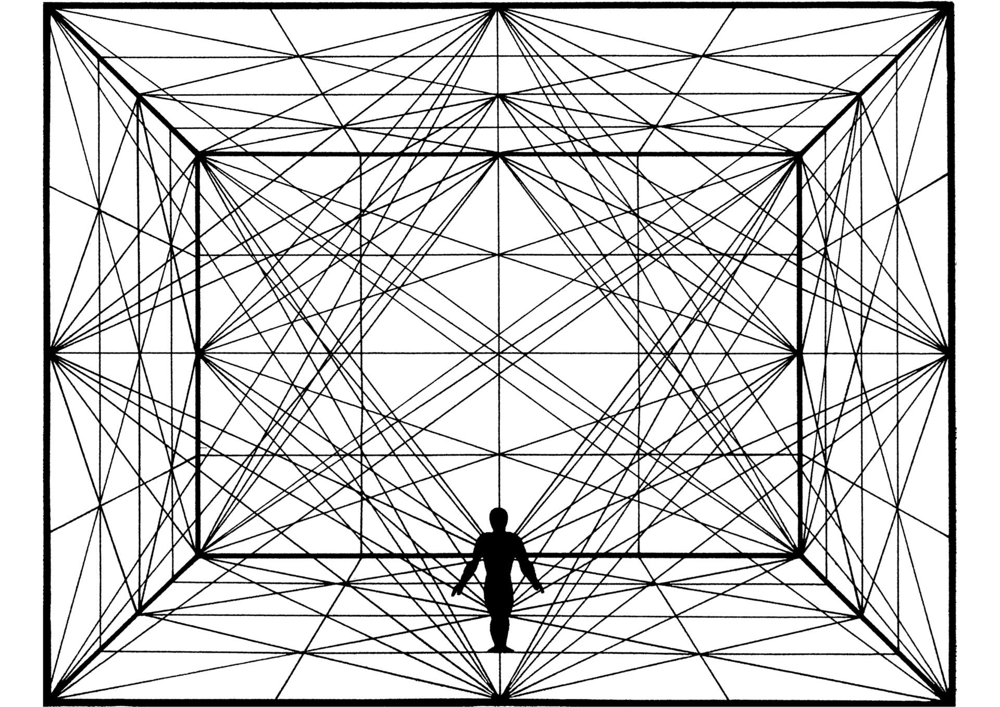

Геометрия в жизни человека
Посмотрите вокруг - всюду геометрия! Современные здания и космические станции, подводные лодки, интерьеры квартир - всё имеет геометрическую форму. Геометрические знания являются сегодня профессионально значимыми для многих современных специальностей: для дизайнеров и конструкторов, для рабочих и учёных. И уже этого достаточно, чтобы ответить на вопрос: «Нужно ли нам геометрия?»
Недостаток жизненного опыта позволяет некоторым школьникам и даже студентам думать, что больше половины изучаемых предметов абсолютно бесполезны и никогда не пригодятся в жизни. На самом деле, знания могут прийти на помощь в неожиданный момент, и доставать учебники уже не будет времени. Одна из полезнейших наук — геометрия, некоторые виды деятельности без нее немыслимы.
Без знания геометрии невозможно построить дом или отремонтировать квартиру. Например, при установке стропил на крышу понадобится формула расчета высоты треугольника, особенно, если крыша несимметричная. Без этого нельзя будет рассчитать длину перекладин, а также узнать количество кровельного материала. Чтобы посчитать количество блоков или кирпичей для стены, плиток для ремонта ванной комнаты, досок для пола — необходимы знания формул площади поверхности, а для объемных покрытий, например, утеплителей — формул объема. Для разработки системы вентиляции, обогрева, канализации или водоснабжения в доме или квартире потребуется расчет внутреннего объема труб, а это невозможно сделать без формулы площади круга. Конечно, можно доверить это профессионалам — но без знания геометрии будет невозможно даже разобраться в чертежах и проверить качество работы. Вообще, чертежи встречаются даже далекому от них человеку на протяжении всей жизни. Это чертеж дома или план ремонта, чертежи деталей на заводе, знать которые нужно не только конструктору и технологу, но и токарю, сварщику, контролеру, менеджерам отделов закупок и продаж. С чертежами непременно столкнется автолюбитель, который захочет провести ремонт своей машины.
Геометрия присутствует практически во всех сферах нашей жизни: нас окружают круглые, квадратные, прямоугольные, треугольные, сферические, кубические, цилиндрические, конические и другие объекты.
Обычно мы не задумываемся о том, почему объекты имеют ту или иную форму, а ее выбор далеко не случаен.
Одна из самых распространенных форм – это окружность и то, что ею ограничено, то есть круг. Вы, наверное, не задумывались, почему трубы – круглые в сечении? Одна из причин в том, что окружность – это замкнутая дуга с постоянной шириной. По этой причине, например, люки не проваливаются вниз, что приводило бы к несчастным случаям, а будь они квадратной или прямоугольной формы, это стало бы неизбежным.
Еще одно свойство окружности: из всех замкнутых кривых заданной длины круг покрывает наибольшую площадь. Это объясняет тот факт, что природа часто использует круг и его объемный эквивалент – сферу. Природа всегда останавливает выбор на самых стабильных формах, минимально расходующих энергию.

Геометрия как психология человека
Наш характер определяется многими признаками, но оказывается, не остается в стороне и геометрия. Когда мы смотрим на какие-либо предметы, то на подсознательном уровне, сопоставляем их с какими-то геометрическими фигурами и стараемся окружить себя такими же.
Существует даже такая наука - психогеометрия. Суть её состоит в исследовании личности. В её основе лежит учение Карла Юнга о психических типах личностей. Однако автором психогеометрии является Сьюзен Деллингер - специалист по социально-психологической подготовке управленческих кадров. Работа С. Деллингер «Психогеометрия: как использовать психогеометрию для воздействия на людей» очень популярна в США. В нашей стране труд С. Деллингер был переработан нашими соотечественниками Анатолием Алексеевым и Ларисой Громовой.
Психогеометрия - это уникальная практическая система анализа личности. Она позволяет:
Мгновенно определить тип личности интересующего вас человека и вашу собственную форму.
Дать подробную характеристику личностных качеств и особенностей поведения любого человека.
Составить сценарий поведения для каждой формы личности в типичных ситуациях.
Чтобы определиться в мире психогеометрии, которая как оказалось, влияет на все наши поступки, Деллингер выявила пять психологических типов, каждому из которых соответствует своя геометрическая фигура: квадрат, круг, треугольник, зигзаг, прямоугольник. Каждая фигура имеет свои психологические особенности и по-разному взаимодействует с остальными. Что ж, заманчиво, не правда ли? Да и не поспоришь ведь, что «круглые» глаза иногда смотрят на мир иначе, чем «квадратные»!
Исследование личности с помощью психогеометрии позволяет быстро и точно нарисовать психологический портрет испытуемого, узнать какие черты его характера являются главными, а какие – второстепенными, а также понять, с кем человеку сложнее всего взаимодействовать.


Заключение.
Заключение
Метод решения хорош, если с самого начала мы можем предвидеть - и далее подтвердить это, - что, следуя этому методу, мы достигнем цели. Так говорил великий немецкий философ, логик, математик Готфрид Вильгельм Лейбниц. Значение геометрии огромно. Геометрия встречается во многих профессиях, без которых человечество не смогло обойтись. Например, перед тем как построить жилое здание, люди проектируют будущую постройку на чертежах в уменьшенном масштабе. Этим занимается архитектор. Тот, кто руководит общестроительными работами и осуществляет контроль над качеством, называется инженером-строителем. Конструктор разрабатывает элементы, части технологических конструкций. Для того чтобы стать конструктором, необходимо сначала выучить множество наук, среди которых присутствует геометрия. С помощью модельера наши вещи становятся более удобными, стильными и качественными. Его задача изготавливать новые модели одежды, определять общее конструктивное решение, придумывать различные дополнения. Психолог с помощью психогеометрии быстро и точно нарисует психологический портрет испытуемого, узнает, какие черты его характера являются главными, а какие – второстепенными, а также поможет понять, с кем человеку сложнее всего взаимодействовать. А если на минуту представить, что геометрии не существует и ни один человек не подозревает о наличие геометрии, то неужели люди до сих пор жили бы в пещерах, ходили на охоту и одевались в шкуры животных? Изучив литературу, интернет - источники, я сделала вывод, что между геометрией и практической действительностью есть множество точек соприкосновения. Со своим проектом я выступила перед учащимися 7 – 8 классов, большинство учащихся о практическом применении геометрии и не ведало. Поэтому смело можно сделать вывод: если бы люди не стали изучать геометрию и пользоваться ею, то прогресс и множество современных изобретений дались бы человечеству с трудом и возможно гораздо позже.
4.Использованные литература и источники
https://www.nkj.ru/archive/articles/19307/
https://infourok.ru/material.html?mid=137763
https://7lafa.com/pageanswer.php?id=44485
http://obuchonok.ru
https://ru.wikipedia.org/wiki/Геометрия:
http://interesnik.com/geometriya-v-nashej-zhizni/
http://www.kindergenii.ru/for-teacher1/geometriy-jizni.htm
https://www.kakprosto.ru/kak-893421-chem-pomozhet-znanie-geometrii-v-
buduschem#ixzz4zda9DK8v
http://enciklopediya1.ru/index/0-397